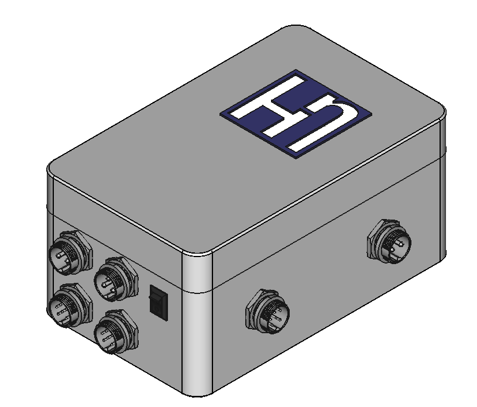

Closed-Loop Tracking, Environmental Fail-Safes & Embedded HMI

The objective was to develop an autonomous dual-axis solar tracking controller capable of maximizing photovoltaic exposure throughout the day while protecting the mechanical structure against adverse environmental conditions.
The first development stage was designed as a reactive closed-loop controller. A custom differential LDR sensor arrangement was used to detect luminous imbalance across the sensing plane. Based on these analog differentials, the controller actuated the azimuth and elevation drives until luminous equilibrium was re-established.
The platform combined sensor feedback, relay-based actuator control, and state-dependent safety logic into a standalone embedded controller prepared for autonomous field operation.
A custom 4-quadrant LDR arrangement was used to compare incident light distribution. The controller continuously evaluated voltage differentials and drove the motors only when the imbalance exceeded defined thresholds.
The system controlled both tracker axes through discrete actuator outputs, allowing directional correction in azimuth and elevation. The logic was intentionally kept modular to support future platform migration.
Beyond light tracking, the controller was designed to account for operational edge cases and structural protection requirements.
The system monitored an anemometer input and switched from tracking mode into a protective parking routine whenever wind conditions exceeded the configured safe operating threshold.
Hardware end-stops and reference positions were used to prevent over-travel and support controlled repositioning. After sunset, the tracker could return toward its initial orientation in preparation for the next daylight cycle.
The first delivered iteration focused on validating subsystem cooperation and demonstrating the feasibility of the embedded control concept. Early bench testing verified the interaction between the sensing stage, actuator logic, and environmental overrides.
This phase evolved into an integrated MVP prototype prepared for client presentation and technical settlement. Version 1.0 established the control logic foundation for future usability and hardware improvements.
V1.0 development path: subsystem validation followed by integrated MVP demonstration.
The second iteration introduced an on-device operator interface, eliminating the need for PC-side parameter tuning. A local LCD display and keypad enabled direct access to configuration values, allowing the user to adjust control margins, delays, and threshold values directly from the controller enclosure.
This significantly improved field usability and moved the system closer to a standalone deployment-ready form. The added interface layer transformed the controller from a hardcoded MVP into a configurable embedded platform.
V2.0 operator interface demonstrating local configuration and runtime interaction without a PC connection.
The project was accompanied by technical documentation covering both the integrated tracker controller and the custom differential LDR sensing module.
The next planned development stage involved migration from Arduino UNO to an STM32-based platform, along with GPS-assisted astronomical tracking to complement the reactive sensor-based mode.
This evolution was intended to increase positioning precision, extend autonomy, and create a more scalable hardware platform. Further development was ultimately paused due to a change in client priorities rather than technical limitations.